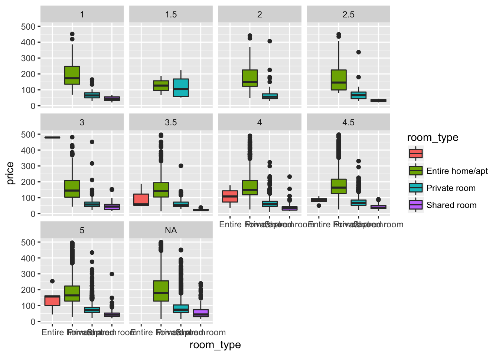
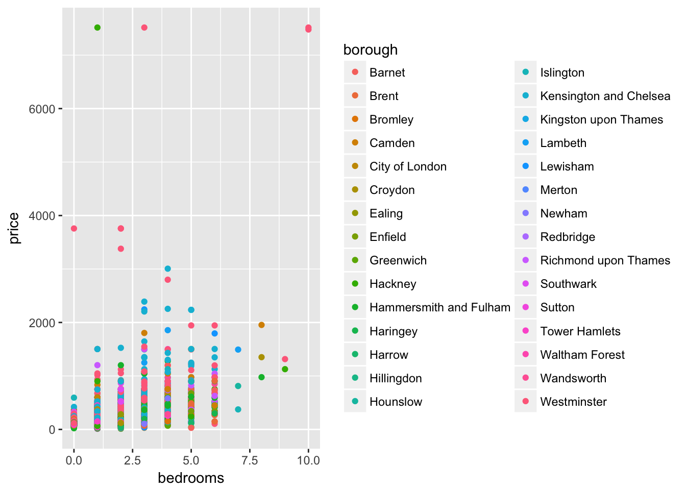
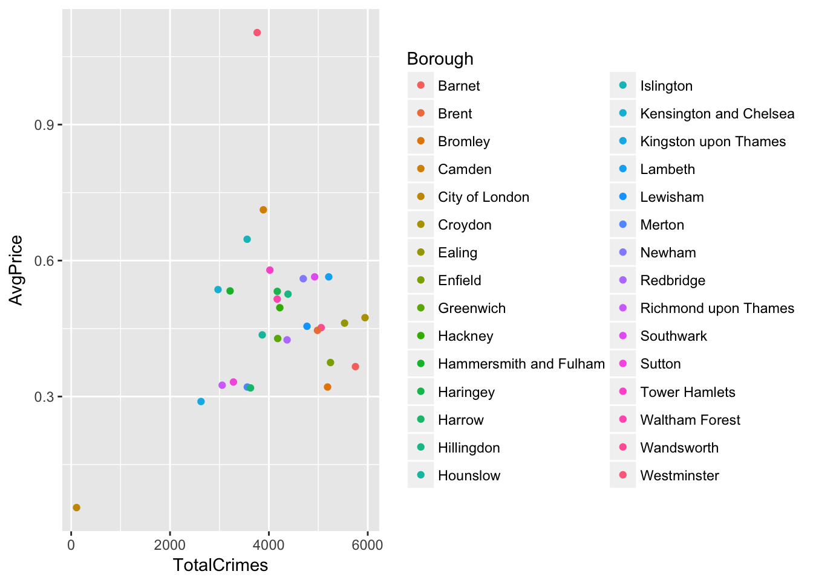
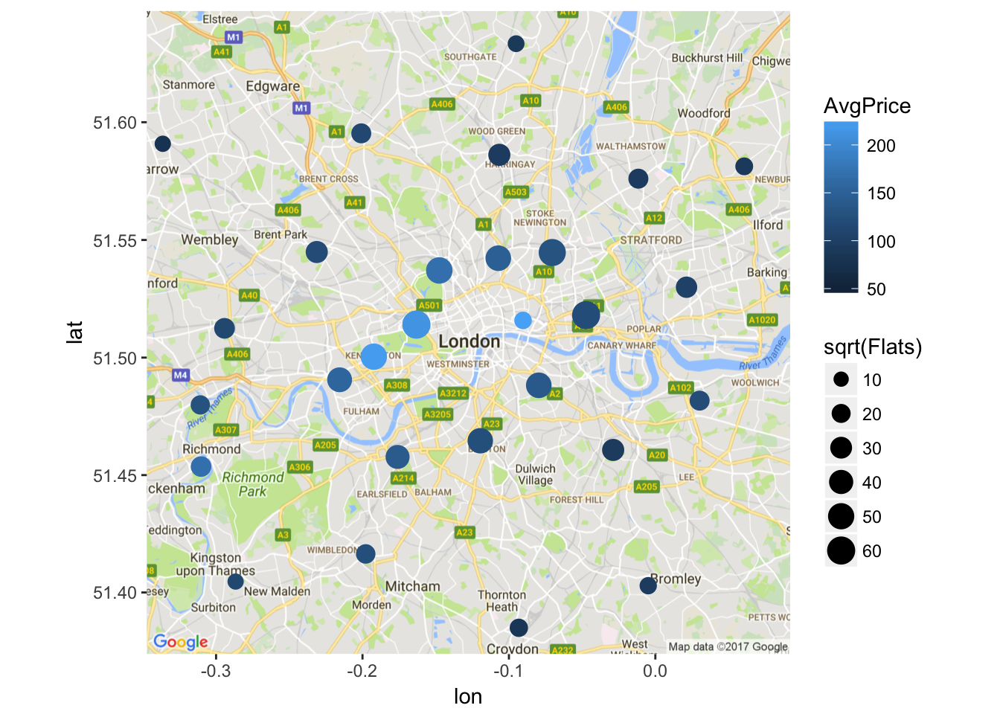
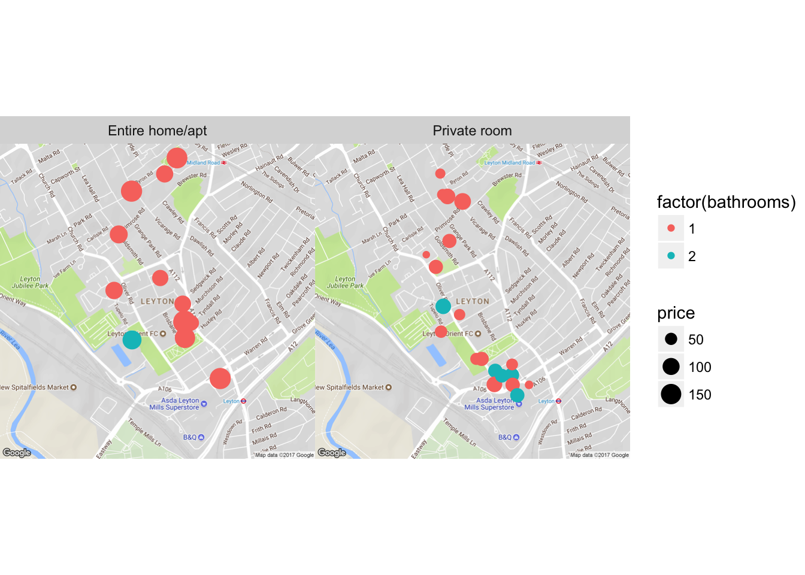
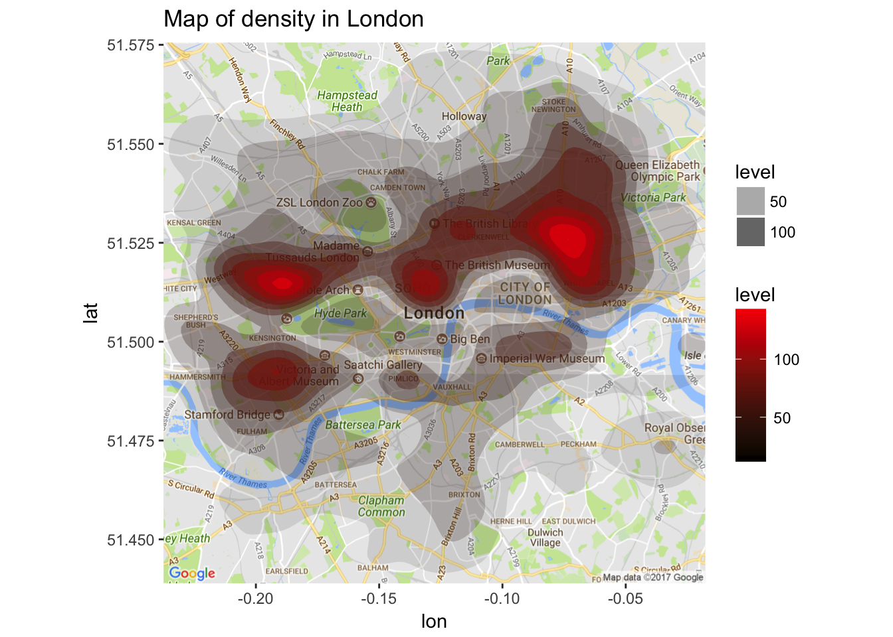
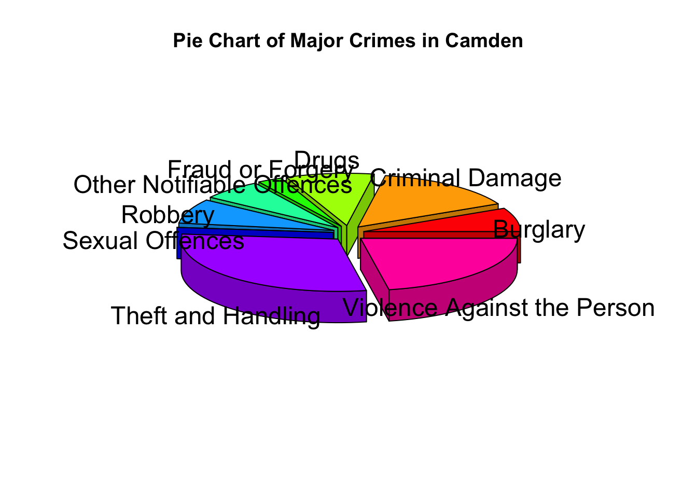
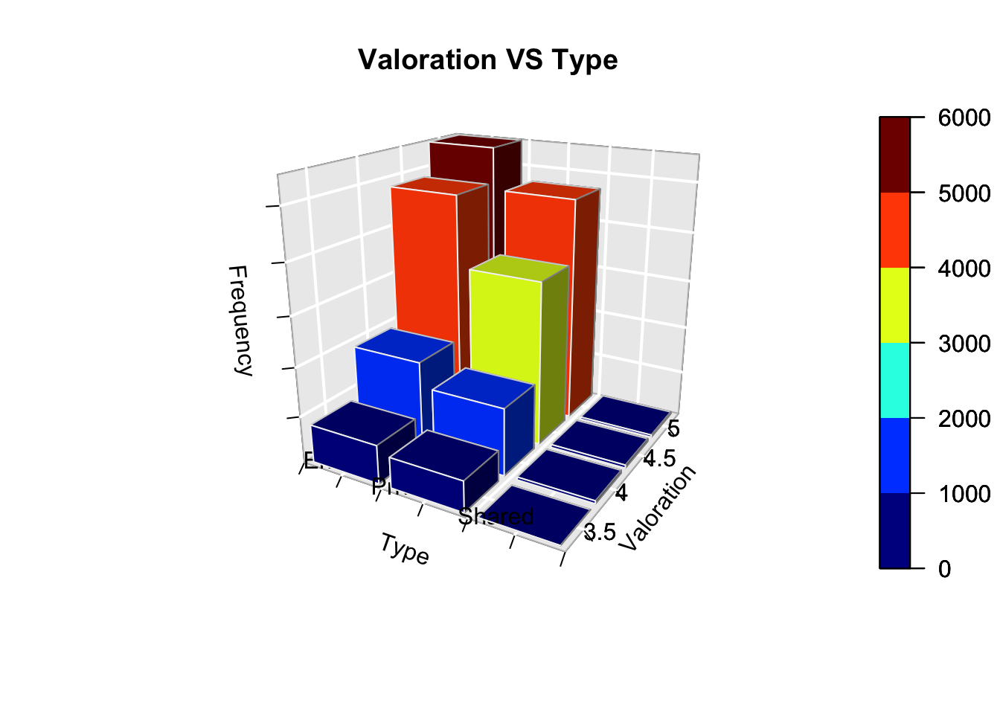

library(readxl)
library(ggplot2)
library(ggmap)
library(plotrix)
library(plot3D)
library(plyr)
library(modeest)
library(reshape2)
crimedata=read.csv("crimedata_london.csv", header=TRUE)
airbnb=read.csv("airbnb_london.csv", header=TRUE)
unemp=read.csv("unemployment_london2.csv", header=TRUE)integrity= data.frame()
for(i in 1:ncol(airbnb)){
vec_aux=c()
vec_aux=is.na(airbnb[,i])
count=sum(vec_aux)
integrity[1,i]=count
}
colnames(integrity)=colnames(airbnb)
integrity## X room_id host_id room_type borough neighborhood reviews
## 1 0 0 15 0 0 0 0
## overall_satisfaction accommodates bedrooms bathrooms price minstay
## 1 10863 4293 137 3943 0 998
## latitude longitude collected
## 1 0 0 0bath_vec=is.na(airbnb$bathrooms)
bath_mean=mean(airbnb[bath_vec==F,]$bathrooms)
airbnb[bath_vec==T,]$bathrooms=round(bath_mean,0)
integrity1= data.frame()
for(i in 1:ncol(airbnb)){
vec_aux=c()
vec_aux=is.na(airbnb[,i])
count=sum(vec_aux)
integrity1[1,i]=count
}
colnames(integrity1)=colnames(airbnb)
integrity1## X room_id host_id room_type borough neighborhood reviews
## 1 0 0 15 0 0 0 0
## overall_satisfaction accommodates bedrooms bathrooms price minstay
## 1 10863 4293 137 0 0 998
## latitude longitude collected
## 1 0 0 0datasummary<-data.frame(unique(airbnb$borough))
colnames(datasummary)<-c("Borough")
long<-c()
lat<-c()
totflats<-c()
avgprice<-c()
unemp11<-c()
unemp14<-c()
totcrimes<-c()
lyearcrimes<-c()
avgyearcrimes<-c()
mfcrime<-c()
avgvls<-c()
minvls<-c()
maxvls<-c()
unemp$Borough=as.character(unemp$Borough)
flats=data.frame(table(airbnb$borough))
colnames(flats)=c("borough","Freq")
getMostFrecuentCrime<-function(aux2){
aux2=data.frame(table(aux2$major_category))
max=0
mfc=""
for(j in 1:nrow(aux2)){
if(aux2[j,2]>max){
mfc=aux2[j,1]
max=aux2[j,2]
}
}
return(as.character(mfc))
}for(i in 1:nrow(datasummary)){
long[i]<-mean(airbnb[airbnb$borough==datasummary$Borough[i],]$long)
lat[i]<- mean(airbnb[airbnb$borough==datasummary$Borough[i],]$lat)
totflats[i]<-flats[flats$borough==datasummary$Borough[i],]$Freq
avgprice[i]<-round(mean(airbnb[airbnb$borough==datasummary$Borough[i],]$price),2)
unemp11[i]<-mean(unemp[unemp$Borough==datasummary$Borough[i],]$X2011.2013)
unemp14[i]<-mean(unemp[unemp$Borough==datasummary$Borough[i],]$X2014.2016)
aux=crimedata[crimedata$borough==datasummary$Borough[i],]
totcrimes[i]=nrow(aux)
lyearcrimes[i]=nrow(aux[aux$year==2016,])
avgyearcrimes[i]=round(nrow(aux)/length(unique(aux$year)),0)
mfcrime[i]=getMostFrecuentCrime(aux)
avgvls[i]=round(mean(aux$value, na.rm=TRUE),3)
minvls[i]=min(aux$value,na.rm = TRUE)
maxvls[i]=max(aux$value, na.rm = TRUE)
}
datasummary$Longitude<-long
datasummary$Latitude<-lat
datasummary$Flats<-totflats
datasummary$AvgPrice<-avgprice
datasummary$Unemp11<-unemp11
datasummary$Unemp14<-unemp14
datasummary$TotalCrimes<-totcrimes
datasummary$LastCrimes<-lyearcrimes
datasummary$AvgCrimes<-avgyearcrimes
datasummary$MostFrecCrime<-mfcrime
datasummary$AvgValue<-avgvls
datasummary$MinValue<-minvls
datasummary$MaxValue<-maxvls
head(datasummary,10)## Borough Longitude Latitude Flats AvgPrice Unemp11
## 1 Croydon -0.09322810 51.38494 319 85.78 8.4
## 2 Kensington and Chelsea -0.19224354 51.50040 2547 222.38 4.4
## 3 Haringey -0.10655531 51.58616 976 94.02 6.8
## 4 Ealing -0.29422467 51.51245 663 113.36 8.8
## 5 Lambeth -0.11955976 51.46462 2114 125.11 8.2
## 6 Islington -0.10724836 51.54226 2182 148.99 7.0
## 7 Hammersmith and Fulham -0.21561726 51.49057 1863 155.87 5.7
## 8 Richmond upon Thames -0.31023548 51.45363 642 169.55 3.4
## 9 Wandsworth -0.17604452 51.45773 1540 141.53 6.3
## 10 Tower Hamlets -0.04729806 51.51806 3562 121.14 9.2
## Unemp14 TotalCrimes LastCrimes AvgCrimes MostFrecCrime AvgValue
## 1 4.7 5945 672 661 Theft and Handling 0.474
## 2 4.8 2971 341 330 Theft and Handling 0.536
## 3 4.7 4170 436 463 Theft and Handling 0.532
## 4 5.1 5531 593 615 Theft and Handling 0.462
## 5 5.1 5211 602 579 Theft and Handling 0.564
## 6 4.6 3560 390 396 Theft and Handling 0.647
## 7 3.5 3215 345 357 Theft and Handling 0.533
## 8 4.0 3055 342 339 Theft and Handling 0.325
## 9 3.5 5058 573 562 Theft and Handling 0.452
## 10 7.7 4020 449 447 Theft and Handling 0.579
## MinValue MaxValue
## 1 0 38
## 2 0 23
## 3 0 20
## 4 0 24
## 5 0 38
## 6 0 39
## 7 0 57
## 8 0 21
## 9 0 22
## 10 0 37mean(airbnb$price,na.rm=TRUE)## [1] 146.8562median(airbnb$price,na.rm=TRUE)## [1] 113sd(airbnb$price,na.rm=TRUE)## [1] 151.5594quan=quantile(airbnb$price ,probs = seq(0, 1, 0.25), na.rm = TRUE)
interquart=quan[4]-quan[2]
as.numeric(interquart)## [1] 108graph1=ggplot(airbnb[airbnb$price<500,],aes(x=room_type,y=price,fill=room_type,na.rm=T))+geom_boxplot(na.rm = T) +facet_wrap(~overall_satisfaction)
graph1
mean(airbnb$bedrooms,na.rm=TRUE)## [1] 1.343525median(airbnb$bedrooms,na.rm=TRUE)## [1] 1sd(airbnb$bedrooms,na.rm=TRUE)## [1] 0.8014457quan1=quantile(airbnb$bedrooms ,probs = seq(0, 1, 0.25), na.rm = TRUE)
interquart1=quan1[4]-quan1[2]
as.numeric(interquart1)## [1] 1anova=aov(price ~ bedrooms, data=airbnb)
graph10=ggplot(airbnb, aes(x = bedrooms, y = price, color=borough)) + geom_point()
anova## Call:
## aov(formula = price ~ bedrooms, data = airbnb)
##
## Terms:
## bedrooms Residuals
## Sum of Squares 206995948 581526716
## Deg. of Freedom 1 34275
##
## Residual standard error: 130.2555
## Estimated effects may be unbalanced
## 137 observations deleted due to missingnessgraph10
check_norm<- function(a){
b<-shapiro.test(a)
return(b$p.value>0.05)
}
check_var<- function(a,b){
require(ggplot2)
c<-data.frame(a,b)
d<-bartlett.test(c)
return(d$p.value>0.05)
}
croydon<-airbnb[airbnb$borough=="Croydon",]
check_norm(croydon$price)## [1] FALSEcheck_var(croydon$price,croydon$bedrooms)## [1] FALSEkruskal.test(borough~price,airbnb)$p.value>0.05## [1] FALSEcheck_norm(croydon$bedrooms)## [1] FALSEkruskal.test(borough~bedrooms,airbnb)$p.value>0.05## [1] FALSEt.test(datasummary$TotalCrimes,datasummary$AvgPrice)$p.value>0.05## [1] FALSEej3_ds<-data.frame(datasummary$Borough,datasummary$TotalCrimes,datasummary$AvgValue)
colnames(ej3_ds)=c("Borough","TotalCrimes","AvgPrice")
graph2=ggplot(ej3_ds, aes(x = TotalCrimes, y = AvgPrice, color=Borough)) + geom_point()
graph2
lon=mean(airbnb$longitude)
lati=mean(airbnb$latitude)
mapLon = get_map(location = c(lon,lati), zoom = 11, maptype="roadmap")## Map from URL : http://maps.googleapis.com/maps/api/staticmap?center=51.510895,-0.127935&zoom=11&size=640x640&scale=2&maptype=roadmap&language=en-EN&sensor=falsegraph3 = mapPoints <- ggmap(mapLon) +
geom_point(aes(x = Longitude, y = Latitude, colour= AvgPrice, size = sqrt(Flats)) , data = datasummary)
graph3
neigh = "Leyton"
a_neigh=airbnb[airbnb$neighborhood==neigh,]
map_b=qmap(neigh, zoom = 15)## Map from URL : http://maps.googleapis.com/maps/api/staticmap?center=Leyton&zoom=15&size=640x640&scale=2&maptype=terrain&language=en-EN&sensor=false## Information from URL : http://maps.googleapis.com/maps/api/geocode/json?address=Leyton&sensor=falsegraph4 = map_b+
geom_point(aes(x = longitude, y = latitude, colour = factor(bathrooms), size=price), data = a_neigh, na.rm = T) +
facet_grid(~room_type)
graph4
london_den <- get_map(location = "London", zoom = 12, maptype = "roadmap") ## Map from URL : http://maps.googleapis.com/maps/api/staticmap?center=London&zoom=12&size=640x640&scale=2&maptype=roadmap&language=en-EN&sensor=false## Information from URL : http://maps.googleapis.com/maps/api/geocode/json?address=London&sensor=falselondonMap<-ggmap(london_den)
graph5 = londonMap +
stat_density2d(aes(x = longitude, y = latitude, fill = ..level..,alpha=..level..), bins = 10, geom = "polygon", data = airbnb) +
scale_fill_gradient(low = "black", high = "red")+
ggtitle("Map of density in London")
graph5
slice_data <- data.frame(table(crimedata[crimedata$borough=="Camden",]$major_category))
colnames(slice_data)=c("Type", "Frequency")
graph6 = pie3D(slice_data[,2],labels=slice_data[,1],explode=0.1,
main="Pie Chart of Major Crimes in Camden")
graph6## [1] 0.2310945 0.9284182 1.6806874 2.0459137 2.3230656 2.7602059 3.0220053
## [8] 3.9698160 5.5890937data_3d = data.frame(table(airbnb$room_type, airbnb$overall_satisfaction))
colnames(data_3d)=c("Type", "Valoration", "Frequency")
data_3d=acast(data_3d,Valoration~Type)## Using Frequency as value column: use value.var to override.#Quito la columna que no tiene tipo
data_3d=data_3d[,c(4,3,2)]
#Junto los que son menores que 3.5
data_3d_vec=as.numeric(rownames(data_3d))<=3.5
data_3d_aux=c()
for (i in 1:ncol(data_3d)){
data_3d_aux[i]=sum(data_3d[data_3d_vec,i])
}
data_3d=rbind(data_3d_aux,data_3d[data_3d_vec==F,])
rownames(data_3d)=c(3.5,4,4.5,5)
colnames(data_3d)=c("Shared","Private","Entire")
hist3D (x = 1:nrow(data_3d), y = 1:ncol(data_3d), z = data_3d,
bty = "g", phi = 20, theta = -60, scale = T,
xlab = "Valoration", ylab = "Type", zlab = "Frequency", main = "Valoration VS Type",
breaks=c(0,1000,2000,3000,4000,5000,6000), border = "white", shade = 0.3,
ticktype = "detailed", space = 0.15, d = 2, cex.axis = 1e-9, opaque.top = F)
text3D(x = 1:nrow(data_3d), y = rep(0.5, nrow(data_3d)), z = rep(3, 4),
labels = rownames(data_3d),
add = T, adj = 0)
text3D(x = rep(1, ncol(data_3d)), y = 1:ncol(data_3d), z = rep(0, ncol(data_3d)),
labels = colnames(data_3d), phi = 20, theta = 20, bty="g", width=2, col.axis = "red",
add = TRUE, adj = 1)